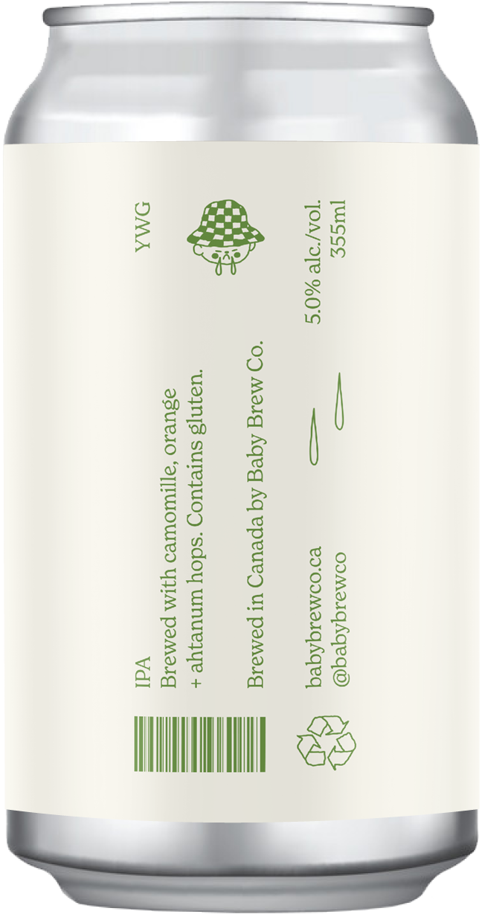

Baby Brew Co. is a conceptual craft beer series consisting of three unique flavours — curated around the theme of whimsical illustrations, bold colours, and minimalism. Each can in the series is differentiated by flavour, beer type, colour choice, and designation of a special typeface. The designs are brought to life through the creation of a fictitious local brewery located here in the city of Winnipeg.


